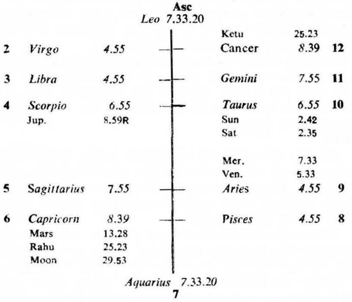
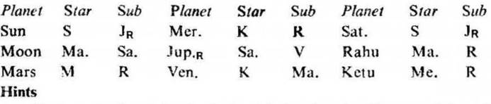
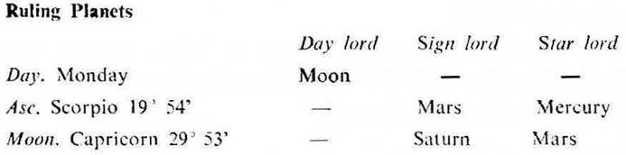
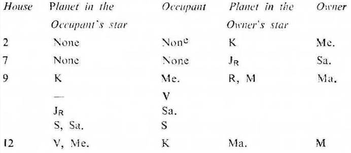

Question. I am bed ridden since long, when will there be an end to my disease?
Number. 90 (out of 249)
Place of Judgment. 23°N 2', 72°E 35'
Time of Judgment.17-5-1971, Monday, 8-30-0 P.M. I.S.T.


If the cuspal sub lord of the 6th be the significator of 5 or 11 the disease is cured during the joint period of the significators of 5 and 11.
In this horary map Moon occupies the 6th. It is in the star Mars owning the badhaka house 9 and occupying 6; it is in the sub Saturn owning 6 and 7. So Moon is the significator of 6 (sickness, disease), 9 (danger to life) and connected with 6 and 7 (maraka). Thus Moon indicates that the query refers to the serious sickness or disease.
6th cusp. The sub lord of the 6th cusp is Venus. It occupies the badhaka house 9. It is in the star Ketu in 12 and in the sub Mars owning 9 and occupying 6. So Venus is the significator of 12 and connected with 6 and 9. It is not the significator of 5 or 11. Hence the cure of the disease is not promised.
11th cusp. The sub lord of the 11th cusp is Rahu. It occupies 6. It is in the star Mars owning 9 and occupying 6. It is in its own sub in 6. So Rahu is the significator of 6, 9 and connected with 6. It is not the significator of 5 or 11. Hence the disease will not be cured.
6th cusp. The cuspal sub lord of 6 is Venus. Venus occupies the movable sign Aries. Its star lord Ketu also occupies the movable sign Cancer. The movable sign governs head; stomach; kidney, skin and the functional system of the body. So these parts of the body will be affected by the disease.
The cuspal sub lord of 6 (Venus) is in conj. with Mercury; so the disease will be of the complicated nature. It is aspected by Mars; so the disease will be acute, inflammatory and painful.
Venus's star lord Ketu is aspected by Saturn; so the disease will be chronic in its nature. It is also aspected by Mars; so there will be painful, acute, sudden and inflammatory diseases.
In this case the querent girl was suffering from many diseases viz. kidney was not functioning, the whole body was getting swelled and so on. Even the expert Doctors could not diagnose the disease.
Asc. The sub lord of the Asc. is Jupiter. It is retrograde and owns the 8th. It is in the star Saturn owning the maraka house 7 and occupying the badhaka house 9. It is in the sub Venus in 9. So Jupiter is the significator of the badhaka and maraka house and connected with the 8th and the badhaka house 9. Hence the cuspal sub lord of the Asc. denotes short life.
Now we may examine the strength of the star lord and the sub lord of Jupiter. The star lord Saturn is aspected by the owner of the 8th (Jupiter); it is the significator of the badhaka house 9; so it becomes evil for longevity.
The sub lord Venus is aspected by the owner of the badhaka house 9 (Mars); it is the significator of the maraka house 12; so it also becomes evil for longevity.
Both the star lord and the sub lord of Jupiter are evil, so it is natural that the cuspal sub lord of the Asc. (Jupiter) becomes evil for longevity. Thus the life of the querent is too short.

Rahu in Capricorn and in conj. with Moon and Mars represents Saturn, Moon and Mars respectively. Ketu being aspected by Moon and Mars represents them both. Saturn being in the sub of retrograde Jupiter may be omitted. Thus the ruling planets are Moon, Mars, Mercury, Rahu and Ketu.

The common planets between the ruling planets and the significators are Moon, Mars, Mercury, Rahu and Ketu.
Out of them Mars is in the sub of the ruling planet Rahu; and Mercury is in the star and sub of the ruling planets viz. Ketu and Rahu respectively. So Mars and Mercury are to be given preference over other significators and they should be considered as the final significators for death.
At the time of judgment (Mars Dasha balance 3Y 6M 22D) the querent is running the joint period of Mars and Saturn which expires on 9-6-1971.
As discussed above the joint period of Mars, Mercury and Mercury (9-6-1971 to 29-7-1971) will prove fatal to the life of the querent when the transit agrees.
Sun will be transitting in Taurus 24°11′ to Gemini 6°39′ in the star Mars (the period ruler) from 9-6-1971 to 22-6-1971 and Mars will transit in Capricorn 23°20′ and forward in its own star (Mars) from 11-6-1971, so the querent will not survive this period.
The querent girl died on 14-6-1971 Monday at 1-0 A.M. I.S.T. At that time Sun was in Taurus 28°47′; Moon in Capricorn 29°23′ and Mars in Capricorn 24°11′, all these three were in the star Mars (the period ruler). Mercury was in Taurus 19°36′ in its own sub Mercury (the sub and inter period ruler).
It may be noted that in this horary map Pisces is on the cusp of the 8th; while at the time of death the Asc. was also in Pisces 2°28′.
At the time of judgment Moon was in Capricorn 29°53′ and at the time of death also Moon was in Capricorn 29°23′.